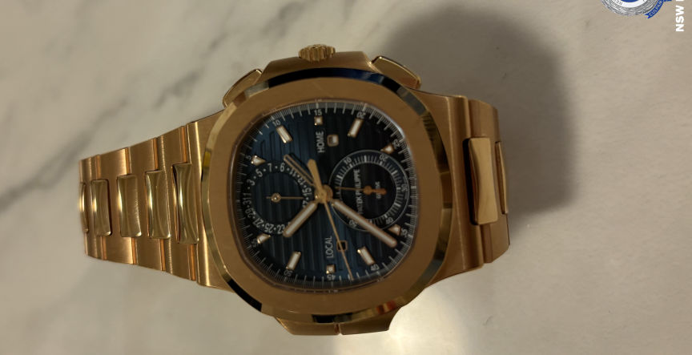

Australian Man Arrested for Money Laundering
Cash seized from the suspect
The 36-year-old's arrest resulted from investigations against a dark web drugs vendor suspected of distributing drugs worth over $80 million in the last six years. Investigators believe he helped the vendor launder at least $3 million.
Extensive investigations resulted in the execution of 3 search warrants in Sydney on January 9 and 10. The searches resulted in the seizure of 14.6 bitcoins, $8735 in AUD, and $7800 in USD. The investigators also found and seized luxury watches and jewelry worth over $1 million and electronic devices.

One of the watches seized from the suspect
The 36-year-old was arrested on January 9. He was charged with knowingly dealing with the proceeds of crime and supplying a prohibited drug.
The Downing Centre Local Court denied him bail on January 10. He will appear before the same court on March 7.
Quote:Detective Superintendent Matthew Craft
Cybercrime detectives have a strong presence on the dark net to identify and ultimately prosecute anyone engaging in illicit activity. The $1 million worth of crypto seized this week is one of the largest single seizures of crypto in recent years. Working alongside partner agencies, such as the NSW Crime Commission, we’re aggressive in our search and seizure capabilities, and to those who think they can hide on the dark web or hide their assets in cryptocurrency, those things are no longer barriers for us. I’d also like to remind the public that buying drugs on the dark web comes with a huge risk, not only because it is completely illegal, but because you don’t know who you’re dealing with and whether your product is what it says it is.